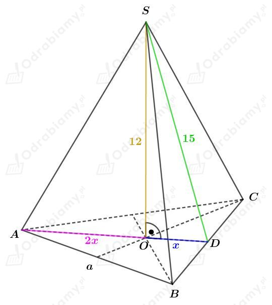
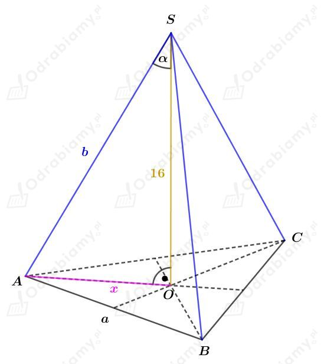
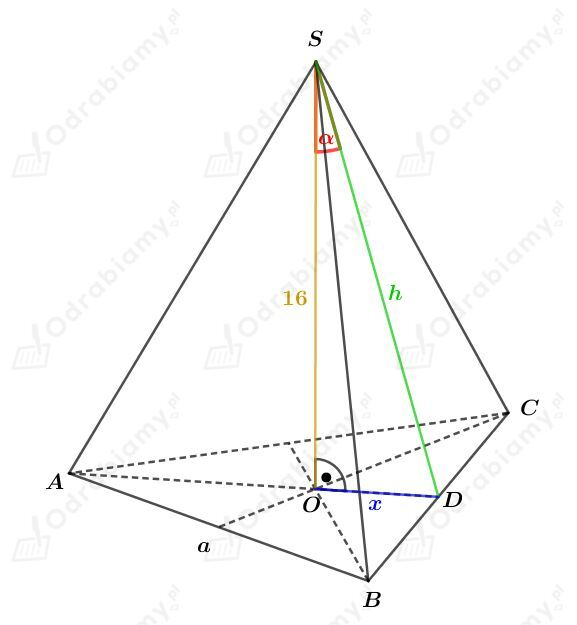
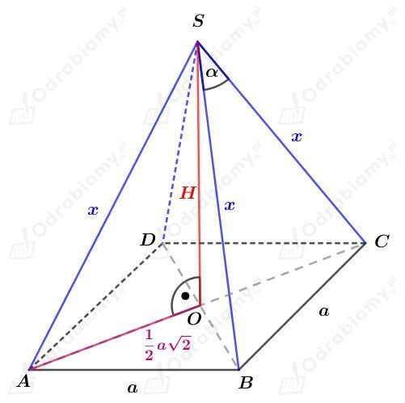
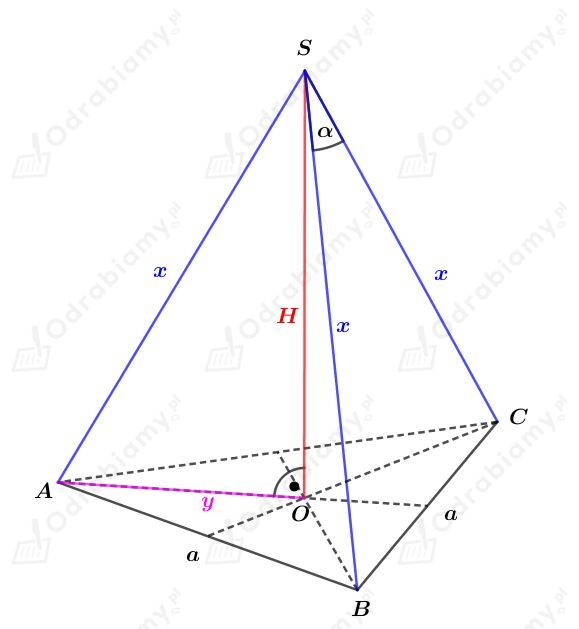

| Objętość ostrosłupa Objętość dowolnego ostrosłupa wyraża się za pomocą wzoru: gdzie Pp jest polem powierzchni podstawy, a H - długością wysokości tego ostrosłupa. |
Rysunek:

Korzystając z twierdzenia Pitagorasa dla trójkąta DOS mamy:
Zatem
Czyli wysokość podstawy tego ostrosłupa ma długość
Obliczmy, jaką długość ma krawędź podstawy a. Korzystając ze wzoru na długość wysokości w trójkącie równobocznym mamy:
Obliczmy pole powierzchni podstawy. Korzystając ze wzoru na pole trójkąta równobocznego mamy:
Obliczmy objętość tego ostrosłupa. Mamy:
| Objętość ostrosłupa Objętość dowolnego ostrosłupa wyraża się za pomocą wzoru: gdzie Pp jest polem powierzchni podstawy, a H - długością wysokości tego ostrosłupa. |
a)
Rysunek:

Wiemy, że:
Korzystając z definicji funkcji tangens w trójkącie prostokątnym mamy:
Zauważmy, że odcinek x stanowi dwie trzecie wysokości podstawy, czyli wysokości trójkąta równobocznego o boku długości a.
Korzystając ze wzoru na długość wysokości trójkąta równobocznego mamy:
Obliczmy pole powierzchni podstawy tego ostrosłupa. Korzystając ze wzoru na pole trójkąta równobocznego mamy:
Obliczmy objętość tego ostrosłupa. Mamy:
b)
Rysunek:

Wiemy, że:
Korzystając z definicji funkcji cosinus w trójkącie prostokątnym mamy:
Korzystając z twierdzenia Pitagorasa dla trójkąta ODS mamy:
Odcinek x stanowi trzecią część wysokości podstawy, czyli wysokości trójkąta równobocznego o boku długości a.
Korzystając ze wzoru na długość wysokości trójkąta równobocznego mamy:
Czyli
Obliczmy pole powierzchni podstawy tego ostrosłupa. Korzystając ze wzoru na pole trójkąta równobocznego mamy:
Obliczmy objętość tego ostrosłupa. Mamy:
a)
Rysunek:

Korzystając z twierdzenia cosinusów dla trójkąta CBS mamy:
Korzystając z twierdzenia Pitagorasa dla trójkąta AOS mamy:
Korzystając ze wzoru na cosinus podwojonego kąta cos2𝛼=1-2sin2𝛼 mamy:
Obie strony równości są dodatnie, zatem
Wyznaczmy objętość tego ostrosłupa. Mamy:
b)
Rysunek:

Korzystając z twierdzenia cosinusów dla trójkąta BCS mamy:
Korzystając z przykładu a) otrzymujemy dalej:
Korzystając ze wzoru na cosinus podwojonego kąta cos2𝛼=1-2sin2𝛼 mamy:
Wiemy, że odcinek y stanowi 2/3 długości wysokości trójkąta równobocznego będącego podstawą tego ostrosłupa. Korzystając ze wzoru na długość wysokości trójkąta równobocznego mamy:
Korzystając z twierdzenia Pitagorasa dla trójkąta AOS mamy:
Obie strony równości są dodatnie, zatem
Wyznaczmy pole powierzchni podstawy tego ostrosłupa. Korzystając ze wzoru na pole trójkąta równobocznego mamy:
Wyznaczmy objętość tego ostrosłupa. Mamy: